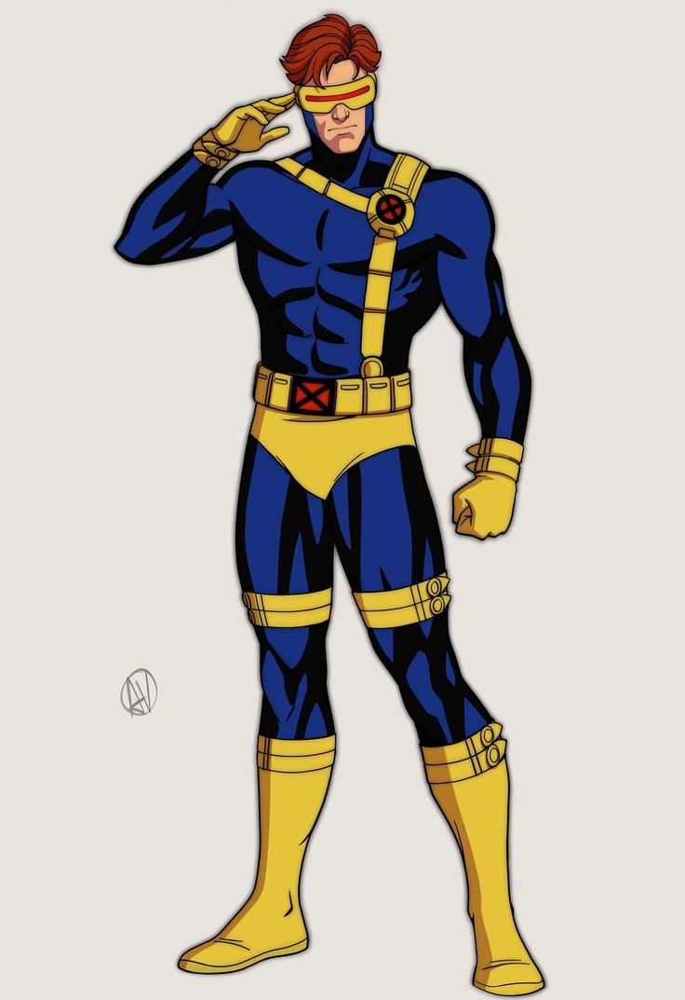
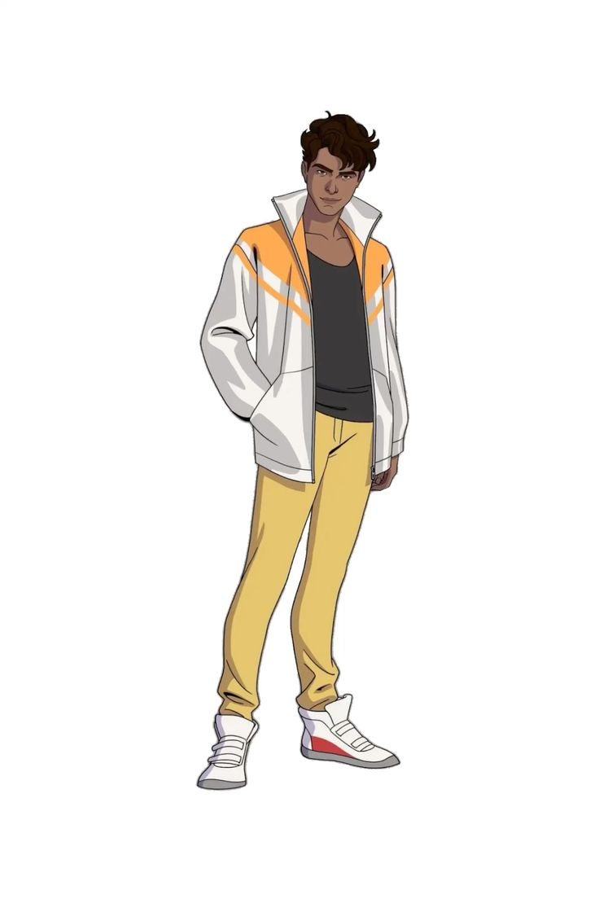
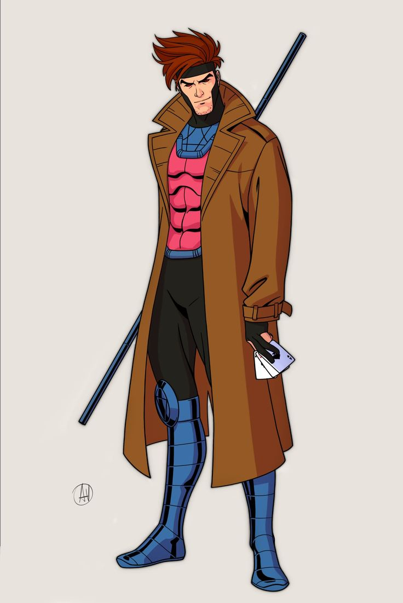
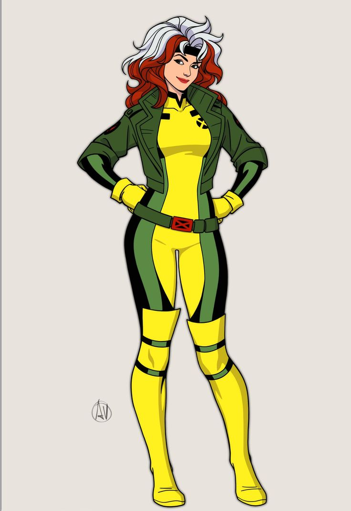
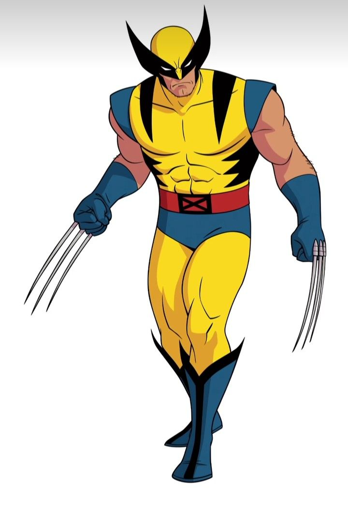
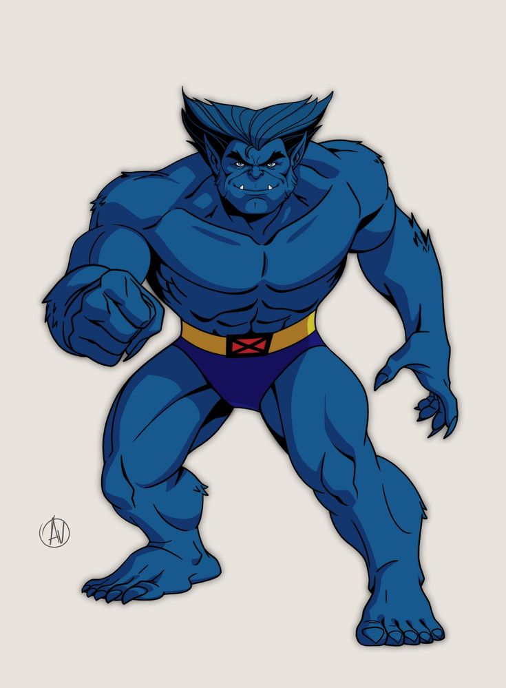
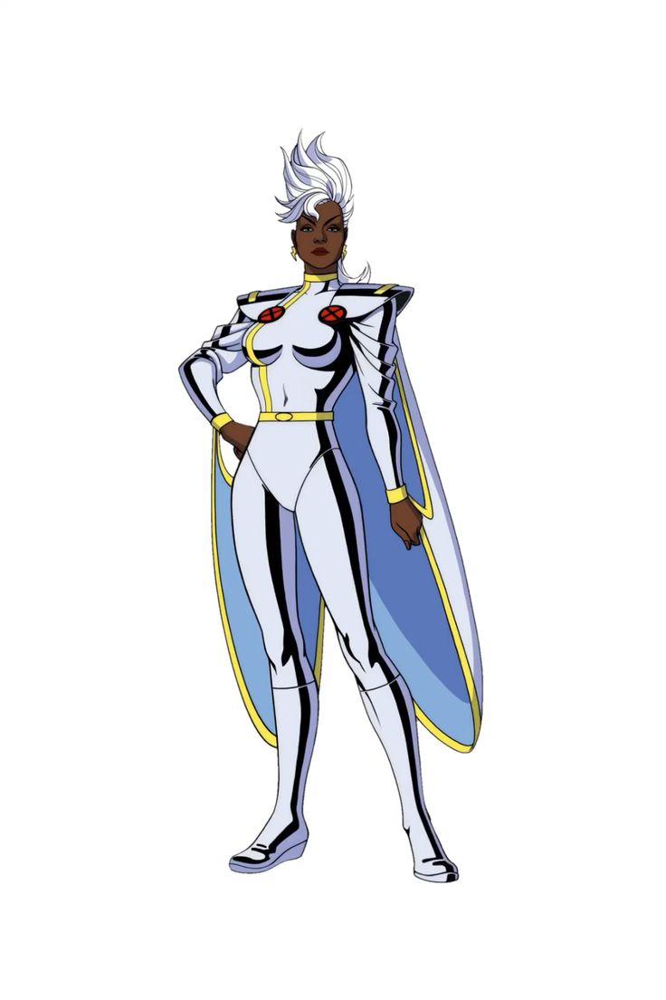
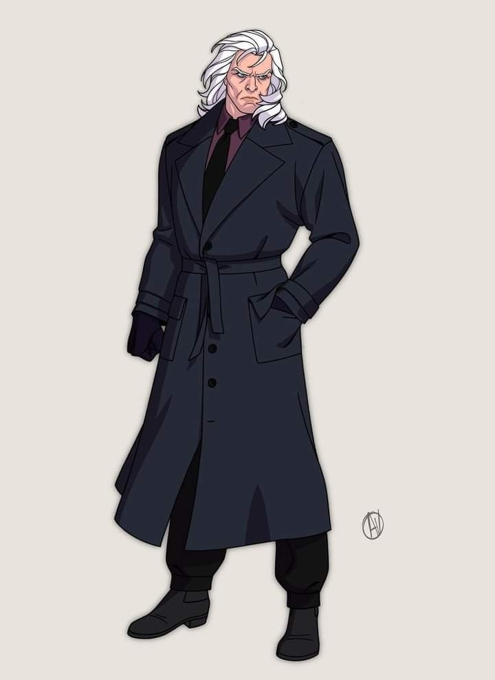

Classificação Mutante
o termo "mutante" é usado para descrever seres humanos que nasceram com uma mutação genética específica no seu DNA, conhecida como "gene X". Esta mutação concede a esses indivíduos habilidades sobre-humanas, que podem variar amplamente entre poderes físicos, psíquicos, energéticos e muitos outros.
Mutantes Alpha
Os mutantes nível Alfa são o segundo mais poderosos e temidos. Eles têm traços mutantes extremamente poderosas e sem falhas significativas. Cerca de 9% de mutantes são de nível Alfa para que eles são muito raros. Eles têm uma aparência humana normal e sua mutação é poderosa, útil e controlável
Ciclope
Ciclope é um dos membros fundadores dos X-Men e serve frequentemente como líder de campo da equipe. Seus poderes mutantes são uma manifestação de sua habilidade para emitir poderosas rajadas de energia de seus olhos.
Roberto da Costa
Roberto da Costa, também conhecido como Mancha Solar, é um mutante brasileiro cujos poderes são baseados na absorção e manipulação de energia solar. Seus poderes conferem-lhe várias habilidades sobre-humanas que são ativadas pela exposição à luz solar.
Gambit
Remy LeBeau, conhecido como Gambit, é um mutante com habilidades únicas relacionadas à manipulação de energia cinética. Seus poderes, combinados com suas habilidades de combate e seu charme natural, fazem dele um membro formidável dos X-Men.
Mutantes Beta
Os mutantes nível Beta têm o mesmo nível de poder como os mutantes de nível Alfa. Mas a diferença entre elas é que os de nível Beta têm falhas, embora muito pequena. Este nível é cerca de 10% da população mutante. Os mutantes nível Beta têm uma aparência humana normal (ou perto disso) e sua mutação é poderosa, útil, mas difícil de controlar, além de poder fazer mal para eles próprios ou pessoas ao redor.
Vampira
Vampira, conhecida pelo codinome Rogue, é uma mutante cujos poderes a tornam uma das mais formidáveis e complexas integrantes dos X-Men. Seus poderes mutantes são baseados na absorção de energia vital e habilidades de outros seres vivos através do contato físico.
Wolverine
Logan, conhecido como Wolverine, é um dos mutantes mais icônicos e complexos do universo Marvel. Seus poderes mutantes incluem o fator de cura acelerado, as garras retrateis e o corpo revestido de adamantium.
Fera
Fera é um dos mutantes mais inteligentes e versáteis do universo Marvel, combinando habilidades físicas sobre-humanas com um intelecto genial. Sua transformação física e suas habilidades científicas fazem dele um membro inestimável dos X-Men e outras equipes de super-heróis.
Mutantes Omega
Mutantes de nível ômega pertencem à classe mais poderosa dos mutantes. São seres com controle absoluto sobre matéria, energia, etc. Esses indivíduos não têm limites para seus poderes e podem até mesmo manipular a realidade, tempo e espaço. Menos de 1% da população nasce nesse nível, o que faz deles os mais raros entre a sua raça.
Tempestado
Ororo Munroe, conhecida como Tempestade, é uma das mutantes mais poderosas e respeitadas do universo Marvel. Seus poderes de manipulação do clima e suas habilidades de liderança a tornam uma figura central nos X-Men e em outras equipes de super-heróis.
Jean Grey

Jean Grey é uma das mutantes mais poderosas do universo Marvel, com habilidades telepáticas e telecinéticas de um nível raramente visto. Sua conexão com a Força Fênix, uma entidade cósmica, amplifica ainda mais suas capacidades, tornando-a uma figura central e complexa nos X-Men.
Magneto
Magneto é um dos mutantes mais poderosos e icônicos do universo Marvel, conhecido por sua habilidade de manipular campos magnéticos e controlar metais. Suas habilidades mutantes e sua visão de mundo moldam-no como um dos vilões mais complexos e intrigantes dos quadrinhos.